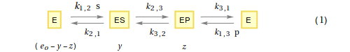

Derivation of the Rate Law for the a Realistic, Reversible Michaelis-Menten Mechanism
http://biology.stackexchange.com/a/43832/1136
Created with Wolfram Mathematica
1 Preliminaries
2. Mechanism

3. The Differentical Equations
Let $y$ be the conentration of ES
Let $z$ be the conentration of EP
Let $e_o$ be the total enzyme concentration
Therefore, the concentration of E (the 'free' enzyme concentration) equals $e_o$ - $y$ - $z$
From the steady-state assumption, the rate of formation of $y$ will equal the rate of breakdown of $y$
$$ {dy\over dt} = {k_{1,2}\ (e_o -y - z)\ s\ +\ k_{3,2}\ z\ -\ (k_{2,1} + k_{2,3})\ y = 0}\ \ \ \ \ \ \ (2)$$
In addition, the rate of formation of $z$ will equal the rate of breakdown of $z$
$$ {dz\over dt} = {k_{1,3}\ (e_o -y - z)\ p\ +\ k_{2,3}\ y\ -\ (k_{3,2} + k_{3,1})\ z = 0}\ \ \ \ \ \ \ (3)$$
4. Solve the Differential Equations
The above differential equations may be solved using $Mathematica$.
There are many ways to do this. Here I'll use the 'old-fashioned' method of substitution.
In $Mathematica$ syntax:
Obtain expressions for y and z only in terms or rate-constants, , s and p.

5. The basic velocity equation
$$ {dp\over dt} = k_{3,1}\ z - {k_{1,3}\ (e_o -y - z)}\ p \ \ \ \ \ \ \ (4)$$
In $Mathematica$ syntax:
6. The kinetic constant form of the rate law.
Using the expressions for $y$ and $z$ obtained in Section 4, an expression for the rate-constant form of the rate law may be obtained as follows:
7. Definition of the Kinetic Constants


8. The Kinetic Constant form of the Rate Law
$$ v = { {({{k_{cat}^f}\over{K_{m}^s}}\ s\ -{{k_{cat}^r}\over{K_{m}^p}}\ p)\ e_o }\over{1 + {{s}\over{K_{m}^s}} + {{p}\over{K_{m}^p}}}}\ \ \ \ \ (5)$$In $Mathematica$ syntax:
9. An Important Check